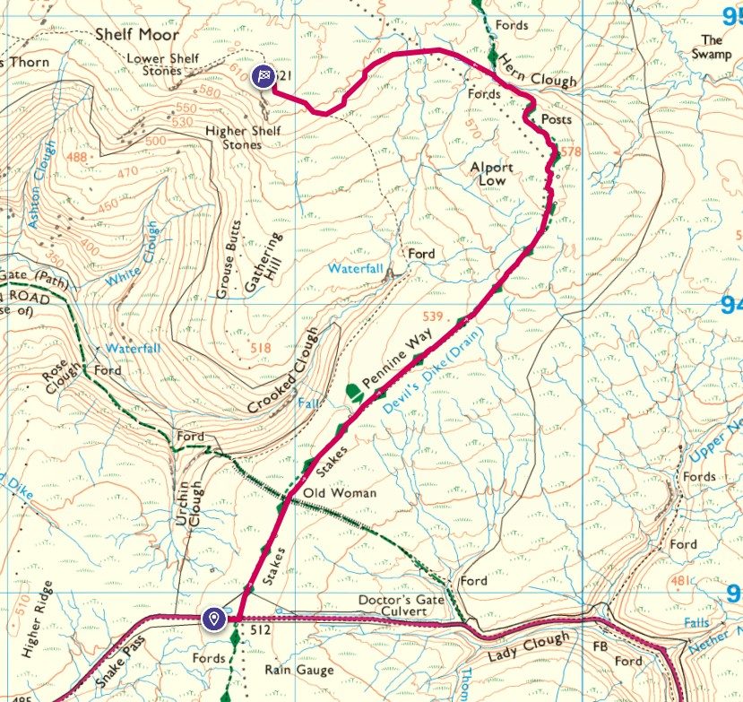
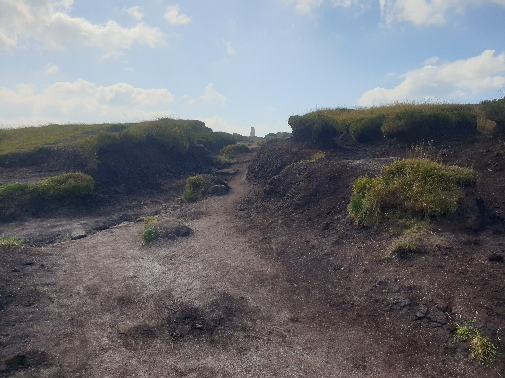
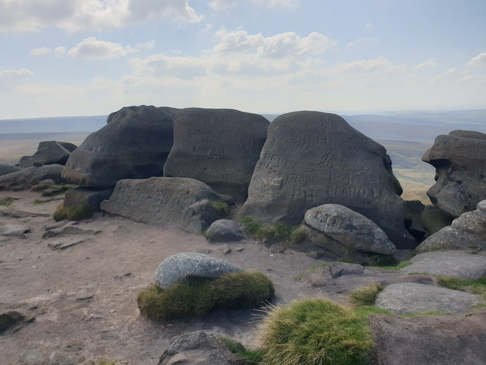
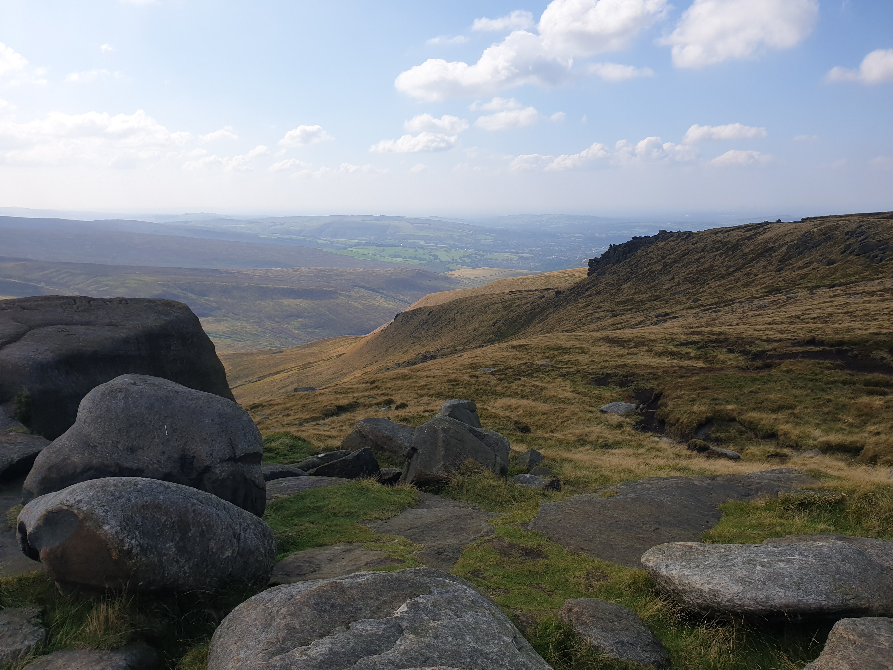
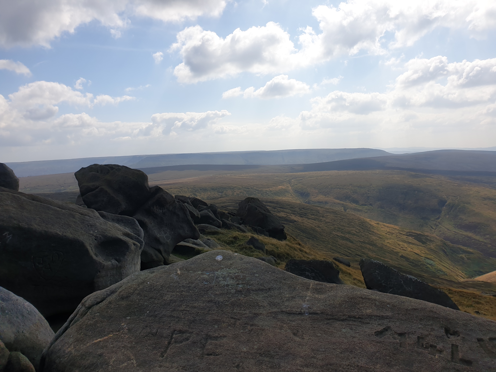
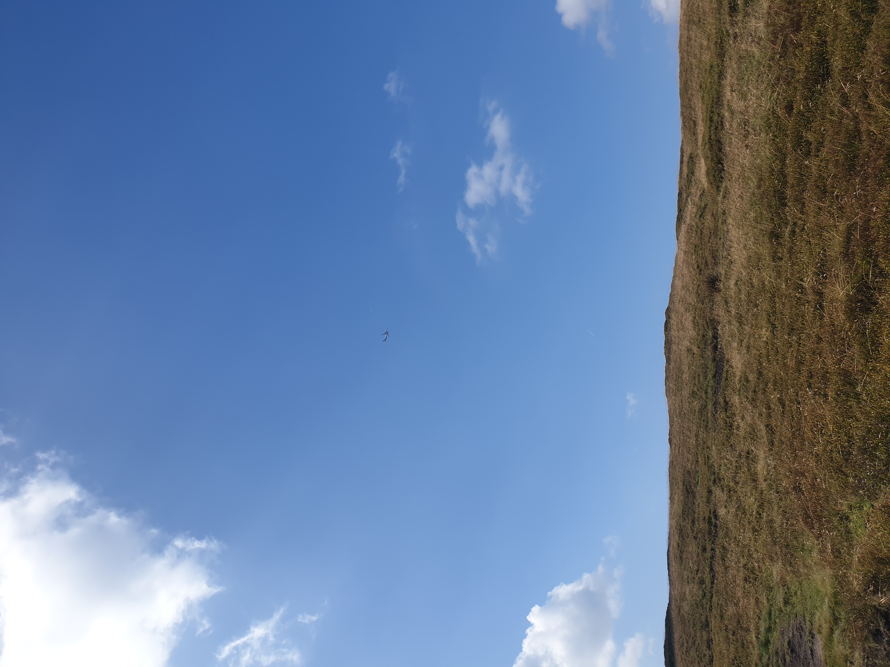

Firstly, and most importantly, this is a crash site where 13 american airmen lost their lives in 1948. The crash site wreckage has remained where it was for all that time as you'll see in my pictures below.

I think I spotted the wreckage/hike randomly on Instagram a while ago so I made a note of it in my Want To Go list and then when I had time for a long roadtrip I put it in the sat nav and headed there.
This is the route, from Snakes pass to the trig point.

The drive is very nice and takes you through the Snakes Pass in the Peak District. It is here where I parked Tiggy at the side of the road where there is parking for lots of cars.

At the start of the path from the road is a notice giving you all the information you need.

The walk is at a fairly level path for a mile or so then steadily uphill (nothing steep) through peaty landscape to the top of the hill.

The path is a mix of dirt and paved.


With some lovely views.


As you climb the hill you start to see bits of wreckage. I was amazed that the wreckage was so visible and nothing has been taken in all the decades since it happened.


From the main wreckage site you can see the trig point at the top of the hill so I headed up to check out the fantastic views.





Then as I look over the view of the peak district and the site of a plane crash, a plane flew over.
